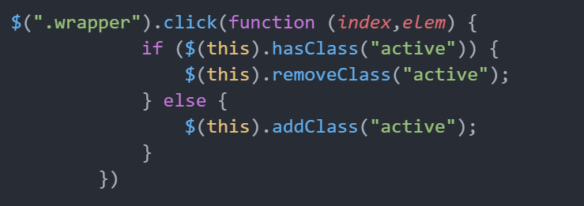

一、html、text、size操作
- .html()
.html()方法是基于原生JS的.innerHTML()方法
取值：只取被选中元素中第一个元素的所有值，输出字符串
赋值：全部赋值，覆盖掉原有内容，参数可以是HTML标签字符串，会被解析成HTML
循环操作
参数可以是函数，能对每一个被选中的元素进行循环操作， 例：
.html(function(index,elem){})
- .text()
.text()方法是基于原生JS的.innerText()方法
取值：拿出所有被选中元素的所有文本内容（包括空格），包括子元素的文本内容
赋值：全部赋值，覆盖掉原有内容，参数可以是HTML标签类型字符串，但是不会被解析，只是纯文本
参数可以是函数，能对每一个被选中的元素进行循环操作， 例：
.text(function(index,elem){})
- .size()
- 求jQuery对象的长度，相当于原生JS的length
二、类名相关操作及深意
- .addClass()
给被选中元素添加类名，可用同时添加多个，中间用空格区分 例：
.addClass("demo1 demo2")循环操作
注意： 但凡可以循环的方法，基本上都可以用function进行一些自定义的操作，格式为
.addClass(function(index,elem){})index，elem分别是当前循环的索引值，元素值
- .removeClass()
给被选中元素移除类名，可用同时删除多个，中间用空格区分 例：
.removeClass("demo1 demo2")，与顺序无关如果参数为空，移除被选中元素所有类名
循环操作
- .hasClass()
.hasClass("active")判断被选中元素里面的元素 有没有 包含active类名的元素 有返回true，没有false

三、.css()和.**Class()同样能够改变元素的样式，他们有什么区别
.css()是基于原生JS的.style方法写的，每次用.css()改变样式会改变dom结构，会让浏览器重新渲染页面.**Class()方法是将已经写好的样式添加到选中的jQuery对象身上，在资源加载时，css文件会缓存到浏览器上，并持续一段时间，这样在改变jQuery对象时就不需要重新加载文件.**Class()方法的优点：整洁，容易维护，复用性高，节约了一些代码请求的带宽，对后面webPack的开展有了很好的支持
四、css、val以及attr与prop的区别
- .css()
赋值
两个参数：
.css("width","100px")一个参数：
.css({width:"100px",height:"200px",backgroundColor:"red"})尺寸可以是纯数字：
.css({width:100,height:200,backgroundColor:"red"})只有jQuery可以尺寸可以运算：
.css({width:"+=100px",height:"200px",backgroundColor:"red"})
取值
.css("backgroundColor")取的是计算样式
- .attr()
getAttribute("key")：返回指定属性名的属性值。setAttribute("key","value")：添加指定的属性，并为其赋指定的值,如果这个指定的属性已存在，则仅设置/更改值。基于setAttribute、getAttribute
取赋值：
.attr("key")，.attr("key","value")布尔属性：该方法可以改变布尔属性的属性值，但是在视觉效果上不会有任何变化
- .prop()
基于原生js的dom对象取属性值的方法，例：dom[prop] prop必须是字符串
取赋值：
.prop("key")，.prop("key","value")布尔属性：该方法可以改变布尔属性的属性值，会在视觉效果上产生相应的变化 例：
checked = "checked"将属性值改为true，显示的是选中状态，属性值为false，显示的是非选中状态特性：可存取，可添加到行间
属性：可用该方法存取，不能添加到行间，不能取行间已有属性
- .val()
操作表单元素属性value的值
取值：参数为空，获取被选中表单元素中第一个元素的value值，与.html()类似
赋值：
表单元素：参数为函数或原始值
.val(function(index,oldValue){})，.val("000")，改变页面内容，行间value值不变,这时取出的value值是页面内容值非表单元素：参数为原始值，行间没有，可以取出